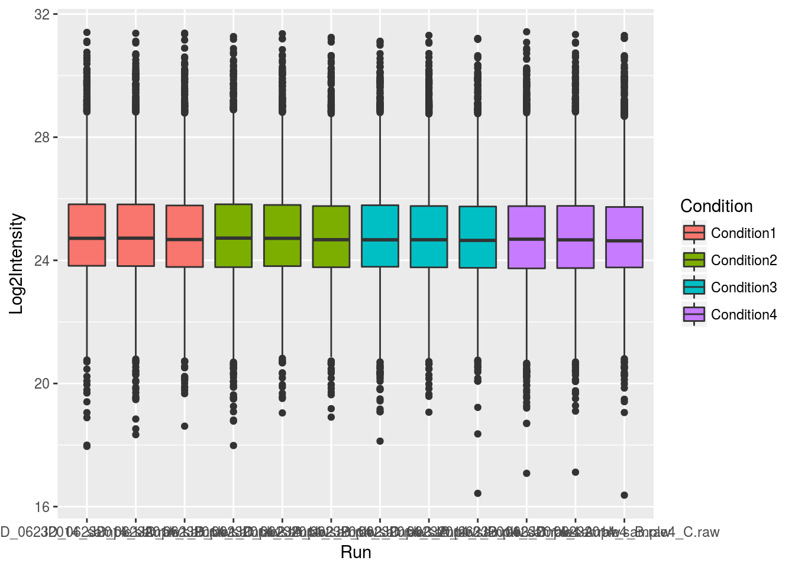
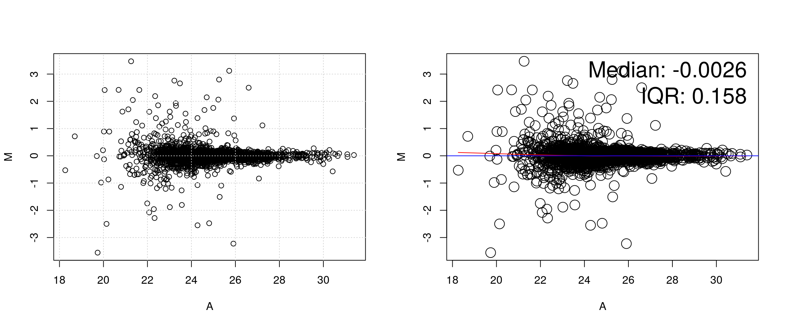

Chapter 6 Tools and plots
6.1 Transformations
Let’s start with the comparison of two vectors of matching expression intensities such as those from two samples in the iprg3 dataset. Let’s extract the intensities of samples JD_06232014_sample1-A.raw (second column) and JD_06232014_sample1_B.raw (third column) and produce a scatter plot of one against the other.
x <- iprg3[[2]]
y <- iprg3[[3]]
plot(x, y)Due to the distribution of the raw intensities, where most of the intensities are low with very few high intensities (see density plots below), the majority of points are squeezed close to the origin of the scatter plot.
plot(density(na.omit(x)), col = "blue")
lines(density(na.omit(y)), col = "red")This has negative effects as it (1) leads to overplotting in the low intensity range and (2) gives too much confidence in the correlation of the two vectors. A simple way to avoid this effect is to directly log-tranform the data or set the graph axes to log scales:
plot(log10(x), log10(y))
plot(x, y, log = "xy")We will see better visualisations to detect correlation between sample replicates below.
It is possible to generalise to production of scatter plots to more samples using the pairs function:
pairs(iprg3[2:6], log = "xy")
A lot of space is wasted by repeating the same sets of plots in the upper right and lower left triangles of the matrix. See the pairs documentation page.
Log-transformation also comes handy when computing fold-changes. Below we calculate the fold-changes and log2 fold-changes (omitting missing values)
fc <- na.omit(iprg3[[2]] / iprg3[[3]])
lfc <- log2(fc)Below, we see how the log2 fold-changes become symmetrical around zero (the absence of change), with positive values corresponding to up-regulation and negative values to down-regulation.
plot(density(lfc), ylim = c(0, 5))
abline(v = median(lfc))
lines(density(fc), col = "red")
abline(v = median(fc), col = "red")Note: when the data is already log-transformed, log fold-changes are computed by subtracting values.
6.2 Comparing samples and linear models
Let’s return to the scatter plot example above and focus on three replicates from consitions 1 and 4, remove missing values and log-tranform the intensites.
x <- log2(na.omit(iprg3[, c(2, 3, 11)]))Below, we use the pairs function and print the pairwise correlations in the upper right traingle.
## put (absolute) correlations on the upper panels,
## with size proportional to the correlations.
## From ?pairs
panel.cor <- function(x, y, digits = 2, prefix = "", cex.cor, ...) {
usr <- par("usr"); on.exit(par(usr))
par(usr = c(0, 1, 0, 1))
r <- abs(cor(x, y))
txt <- format(c(r, 0.123456789), digits = digits)[1]
txt <- paste0(prefix, txt)
if (missing(cex.cor)) cex.cor <- 0.8/strwidth(txt)
text(0.5, 0.5, txt, cex = cex.cor * r)
}
pairs(x, lower.panel = panel.smooth, upper.panel = panel.cor)It is often assumed that high correlation is a halmark of good replication. Rather than focus on the correlation of the data, a better measurement would be to look a the log2 fold-changes, i.e. the distance between repeated measurements. The ideal way to visualise this is on an MA-plot:
par(mfrow = c(1, 2))
r1 <- x[[1]]
r2 <- x[[2]]
M <- r1 - r2
A <- (r1 + r2)/2
plot(A, M); grid()
library("affy")
affy::ma.plot(A, M)See also this post on the Simply Statistics blog.
abline(0, 1) can be used to add a line with intercept 0 and slop 1. It we want to add the line that models the data linearly, we can calculate the parameters using the lm function:
lmod <- lm(r2 ~ r1)
summary(lmod)##
## Call:
## lm(formula = r2 ~ r1)
##
## Residuals:
## Min 1Q Median 3Q Max
## -3.4939 -0.0721 0.0126 0.0881 3.4595
##
## Coefficients:
## Estimate Std. Error t value Pr(>|t|)
## (Intercept) 0.348190 0.091842 3.791 0.000153 ***
## r1 0.985878 0.003688 267.357 < 2e-16 ***
## ---
## Signif. codes: 0 '***' 0.001 '**' 0.01 '*' 0.05 '.' 0.1 ' ' 1
##
## Residual standard error: 0.3263 on 3024 degrees of freedom
## Multiple R-squared: 0.9594, Adjusted R-squared: 0.9594
## F-statistic: 7.148e+04 on 1 and 3024 DF, p-value: < 2.2e-16which can be used to add the adequate line that reflects the (linear) relationship between the two data
plot(r1, r2)
abline(lmod, col = "red")As we have seen in the beginning of this section, it is essential not to rely solely on the correlation value, but look at the data. This also holds true for linear (or any) modelling, which can be done by plotting the model:
par(mfrow = c(2, 2))
plot(lmod)
Cook’s distance is a commonly used estimate of the influence of a data point when performing a least-squares regression analysis and can be used to highlight points that particularly influence the regression.
Leverage quantifies the influence of a given observation on the regression due to its location in the space of the inputs.
See also ?influence.measures.
Challenge
- Take any of the
iprg3replicates, model and plot their linear relationship.- The Anscombe quartet is available as
anscombe. Load it, create a linear model for one \((x_i, y_i)\) pair of your choice and visualise/check the model.
x3 <- anscombe[, 3]
y3 <- anscombe[, 7]
lmod <- lm(y3 ~ x3)
summary(lmod)##
## Call:
## lm(formula = y3 ~ x3)
##
## Residuals:
## Min 1Q Median 3Q Max
## -1.1586 -0.6146 -0.2303 0.1540 3.2411
##
## Coefficients:
## Estimate Std. Error t value Pr(>|t|)
## (Intercept) 3.0025 1.1245 2.670 0.02562 *
## x3 0.4997 0.1179 4.239 0.00218 **
## ---
## Signif. codes: 0 '***' 0.001 '**' 0.01 '*' 0.05 '.' 0.1 ' ' 1
##
## Residual standard error: 1.236 on 9 degrees of freedom
## Multiple R-squared: 0.6663, Adjusted R-squared: 0.6292
## F-statistic: 17.97 on 1 and 9 DF, p-value: 0.002176par(mfrow = c(2, 2))
plot(lmod)
6.3 Volcano plots
6.4 Visualising intersections: Venn, Euler, upset plots
6.5 Unsupervised learning
In unsupervised learning (UML), no labels are provided, and the learning algorithm focuses solely on detecting structure in unlabelled input data. One generally differentiates between
Clustering, where the goal is to find homogeneous subgroups within the data; the grouping is based on distance between observations.
Dimensionality reduction, where the goal is to identify patterns in the features of the data. Dimensionality reduction is often used to facilitate visualisation of the data, as well as a pre-processing method before supervised learning.
UML presents specific challenges and benefits:
- there is no single goal in UML
- there is generally much more unlabelled data available than labelled data.
Unsupervised learning techniques are paramount for exploratory data analysis and visualisation.
6.5.1 Dimensionality reduction (PCA)
6.5.2 K-means clustering
6.5.3 Hierarchical clustering
6.6 Heatmaps
See
Key M. A tutorial in displaying mass spectrometry-based proteomic data using heat maps. BMC Bioinformatics. 2012;13 Suppl 16:S10. doi: 10.1186/1471-2105-13-S16-S10. Epub 2012 Nov 5. Review. PMID: 23176119; PMCID: PMC3489527.